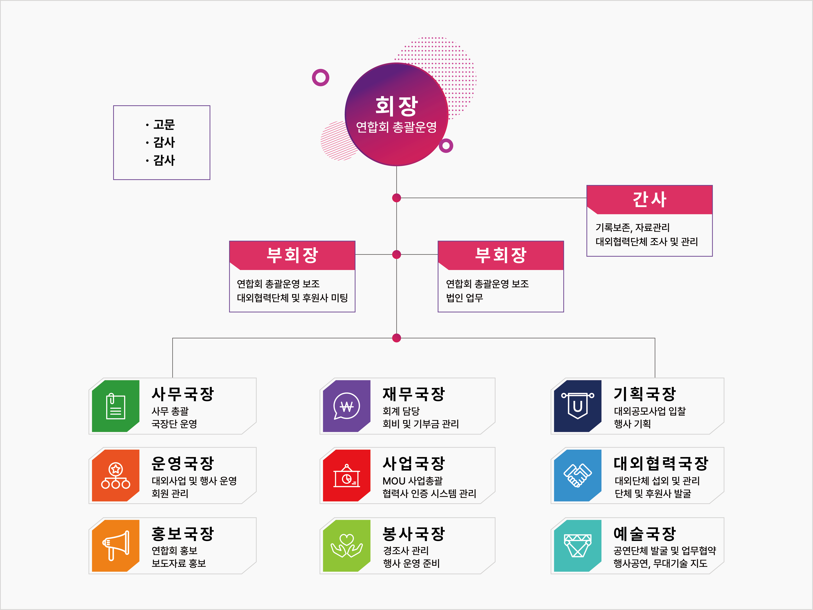

연합회 소개
울산청년연합회는 청년과 기업, 그리고 정책을 연결하여 지속 가능한 지역 생태계를 만듭니다. 창업, 문화, 네트워킹, 투자 유치 등 다양한 프로그램을 통해 청년의 성장을 지원합니다.
- 청년 친화 네트워크 구축
- 기업·기관 협력 프로젝트
- 정책 제안 및 의견 수렴
비전 & 미션
청년의 도전이 울산의 내일이 되도록 연결과 실행으로 돕습니다.
비전연결을 통한 성장
미션청년·기업·정책의 허브
주요 사업
청년 창업 지원
멘토링, 사업계획 코칭, 투자 연계로 아이디어를 사업으로 성장시킵니다.
기업·청년 네트워킹
매칭 행사 및 정기 포럼으로 현장 수요와 청년 인재를 연결합니다.
홍보·콘텐츠 제작
지역 기업/행사 홍보 영상 제작과 캠페인 운영을 지원합니다.
공지 & 소식
- 2025-03-29울산청년연합회 홈페이지 오픈
- 2025-08-18크루페스티벌 청년 참여 부스 모집 공고
조직도
울산청년연합회의 조직 구조를 한눈에 확인하세요.

회원/참여 신청
문의하기
이메일: uya250329@naver.com
전화: 070-4130-8261
연합회 위치: 울산광역시 남구 중앙로 187 3층 울산청년연합회